Ingredientes
- 1 Lata de leite condensado
- 2 Caixas de creme de leite
- 1 Barra de chocolate meio amargo
- 1 Caixa de uvas sem semente
- 1 Colher de margarina
Utensílios
-
Panela
-
 Colher de sopa
Colher de sopa
-
Colher de pau
-

Bowl
Modo de preparo
- Comece deretendo a margarina na panela
- Acrescente o leite condensado e o creme de leite
- Mexa com a colher de pau até o conteúdo da panela chegar no ponto de brigadeiro de colher
- Reserve na geladeira em um refratário de sua escolha
- Enquanto o brigadeiro branco esfria, lave as uvas, corte elas ao meio e reserve
- Depois quebre o chocolate em pedaços no bowl e derreta de 30 em 30 segundos no microondas
- Quando o chocolate derreter adicione o creme de leite e misture até ficar homogêneo
- Para finalizar é so adicionar as uvas picadas no refratário do brigadeiro branco e por cima o ganache de chocolate.